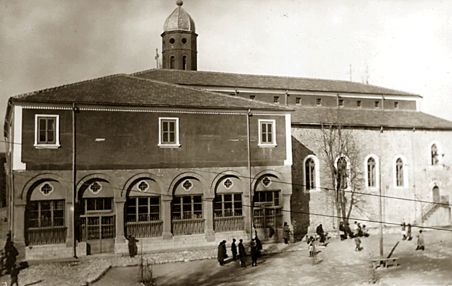
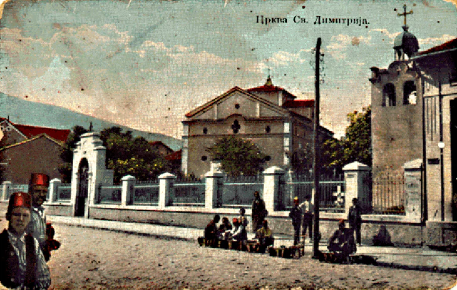
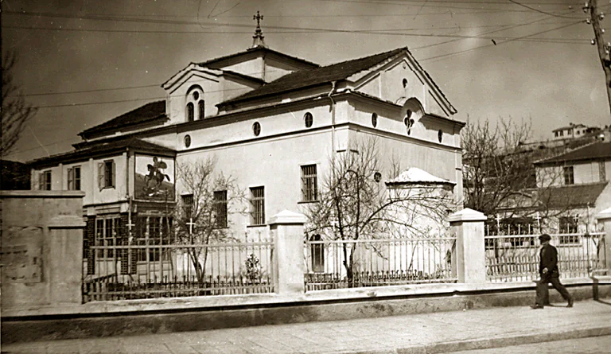
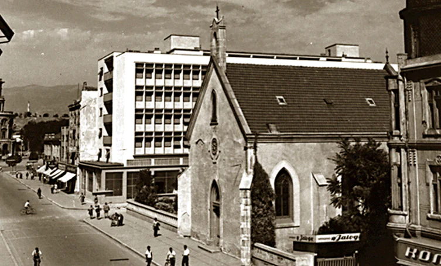
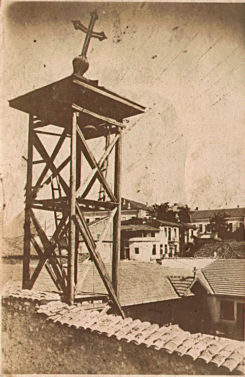
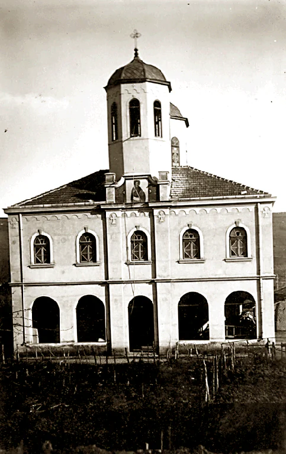

Sveti Spas
- Produktion
- UFUŽ und Dokumentarfilm Prag
- Drehbuch und Regie
- Slavko Janevski und EMAN CANERA
- Jahr
- 1959
- Dauer
- 00:31

Die Kirche Hl. Panteleimon oberhalb des Dorfes Gorno Nerezi, südwestlich von Skopje. Sie wurde 1164 von Alexios Komnenos aus der Familie der Komnenen errichtet. Bis heute erhalten ist die Inschrift auf dem marmornen Türsturz am Übergang vom Narthex in den Naos. Der Bau ist einschiffig, aus Stein und Ziegel, mit einer achteckigen Zentralkuppel und vier kleinen vierseitigen Kuppeln an den Ecken. Die Kirche ist das älteste byzantinische Denkmal nicht nur in Skopje, sondern in ganz Mazedonien. Sie wurde gleich nach dem Bau ausgemalt. Später, im 15., 16. und 19. Jahrhundert, wurde sie neu ausgemalt, doch die ursprünglichen Fresken machen sie zu einem herausragenden Denkmal.


Die Hl. Muttergottes, erbaut 1835. Sie stand am linken Ufer des Vardar. Sie zeigt Einflüsse byzantinischer Architektur, mit barocken zeitgenössischen städtischen Elementen in der Raumgestaltung. Sie brannte im Zweiten Weltkrieg ab. Bis dahin war sie die Kathedralkirche der Stadt, danach wurde es die Kirche Hl. Demetrius. (1920er Jahre)

Kirche Hl. Muttergottes - 1920er Jahre.

Versammlung des Volkes am Vidovdan-Fest im Hof der Kirche Hl. Muttergottes - 1919.

Die Kirche Hl. Demetrius wurde im 18. Jahrhundert an der Stelle der mittelalterlichen Kirche Hl. Demetrius erbaut. 1886-94 wurde sie instand gesetzt; damals entstanden die Umfassungsmauer und der Glockenturm. Bis 1980 war sie Kathedralkirche. Sie steht am linken Ufer des Vardar nahe der Steinbrücke (1920er Jahre).

Kirche Hl. Demetrius - 1930er Jahre.

Die Metropolie von Skopje. Sie stand am Kai auf der linken Seite des Vardar - 1920er Jahre.

Die Hauptstraße während ihrer Entstehung (heute die Straße „Makedonija“, die vom heutigen Museum der Stadt Skopje zur Steinbrücke führt). Rechts die Katholische Kirche (Haus der Hl. Martha) im gotischen Stil sowie einzelne Gebäude auf der linken Seite. Sie wurde mit einer Spende der österreichischen Regierung erbaut. Der Straßenabschnitt an der Steinbrücke wurde 1911 gepflastert, damit Sultan Murad V. passieren konnte, der Skopje vor seiner Reise zum Amselfeld besuchte.

Die Katholische Kirche im gotischen Stil, erbaut Anfang des 20. Jahrhunderts - 1920er Jahre.

Die Hauptstraße zum Platz hin. Im Vordergrund die Katholische Kirche. (1950er Jahre)

Die Hauptstraße in Richtung Bahnhof (heute Museum der Stadt Skopje). Links ist die Katholische Kirche zu sehen. (1950er Jahre)

Der Glockenturm der Kirche Sveti Spas - 1910er Jahre.

Die Kirche Sveti Spas liegt gegenüber der Festung von Skopje - Kale. Sie wurde Ende des 17. Jahrhunderts errichtet. Es ist eine kleine, halb in die Erde eingelassene Kirche. Sie zeichnet sich durch eine der ältesten und schönsten Altarschranken aus, in Tiefschnitzerei aus Holz gefertigt von den Brüdern Frčkovski aus Galičnik: Petre als Leiter, Marko und Makarija. Sie sind auf der rechten Seite der Ikonostase dargestellt. Die Ikonostase entstand 1814-1824. Das Foto stammt aus den 1920er Jahren.

Der Hof der Kirche Sveti Spas. Die Aufnahme entstand in den 1930er Jahren.

Panorama von Skopje. Unten im Vordergrund die Kirche Sveti Spas - 1970er Jahre.

Die Kirche Hl. Georg - im Viertel „Čair“ - 1930er Jahre.

Die Kirche „Hl. Konstantin und Hl. Helena“. - 1930er Jahre.

Der Ruhmestempel und der Soldatenfriedhof aus den Balkankriegen. Geweiht 1928. (1930er Jahre)

 Aquädukt4 Postkarten
Aquädukt4 Postkarten Kale30 Postkarten
Kale30 Postkarten Brücken60 Postkarten
Brücken60 Postkarten Kai58 Postkarten
Kai58 Postkarten Platz46 Postkarten
Platz46 Postkarten Bauten66 Postkarten
Bauten66 Postkarten Christliche Gotteshäuser19 Postkarten
Christliche Gotteshäuser19 Postkarten Muslimische Bauten33 Postkarten
Muslimische Bauten33 Postkarten Offiziersheim29 Postkarten
Offiziersheim29 Postkarten Theater28 Postkarten
Theater28 Postkarten Bahnhof13 Postkarten
Bahnhof13 Postkarten Schulen36 Postkarten
Schulen36 Postkarten Parks12 Postkarten
Parks12 Postkarten Märkte18 Postkarten
Märkte18 Postkarten Straßen38 Postkarten
Straßen38 Postkarten Panorama I60 Postkarten
Panorama I60 Postkarten Panorama II30 Postkarten
Panorama II30 Postkarten Collagen55 Postkarten
Collagen55 Postkarten Hochwasser9 Postkarten
Hochwasser9 Postkarten Erdbeben27 Postkarten
Erdbeben27 Postkarten Skopje 200026 Postkarten
Skopje 200026 Postkarten